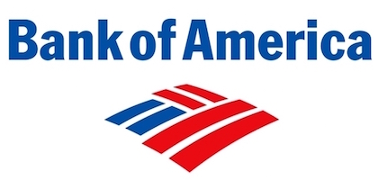
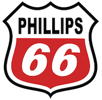

21st Century
Advantage Program
Corporate exposure, team building, and personal character development are a few of the opportunities offered by this nationally recognized, innovative program in business education.
Corporate sponsors provide the underpinning for student teams, each led by an upperclassman mentor to engage in competitive, experience-based learning opportunities. This program introduces foundational business skills, it addresses those factors that impede retention for first-time in college students, and integrates students, from the very beginning of their college careers, into the contemporary business environment.
Program Partners
- Corporate Sponsors.
- Team Leaders - sophomore level student mentors.
- Faculty and Staff
- Freshman and Transfer Students
Key Components
- Team Building - All students are assigned to teams to prepare group projects, case studies and presentations. Team work is at the core of business processes in many industries and is a necessary skill for success.
- Mentorship - The value of a supportive mentoring relationship is a key to student success. Each team is led by a sophomore Team Leader who acts as a built-in support system for each team member and the team as a whole.
- Capstone Business Orientation and Career Development Courses - The entire team is enrolled in the same section of courses over a three-semester period. These courses are designed to build confidence, business acumen, teamwork, and professional skill. The format builds community while ensuring key information is shared with consistency.
- Corporate Adoptions - All teams are adopted by a corporate sponsor and provided with corporate "swag" (paraphernalia) to brand their corporate connection. They conduct research related to this company and industry and interact with corporate representatives over the course of their time at the university. This unique exposure gives students a head start in building a professional network and seeking internships.
- Personal Development - Coursework and added programming are designed to build an understanding of personal strengths and areas where further development is needed. Students are encouraged to identify their passions, develop personal ethical standards, and connect with the community.
- Academic/Tutoring Support - Staff work directly with students to monitor progress and connect them with support services as needs arise. Group and individual tutoring are available in virtually every subject.
- Faculty and Staff Interaction - Students benefit from a network of committed professionals whose primary objective is to ensure their growth and success as students. Staff maintain an open door policy to ensure access to guidance and support.
Core Objectives
- To Develop a culture of academic excellence through healthy social support systems and supportive mentoring relationships.
- Ensure student retention and successful completion of the Bachelors of Business Administration (B.B.A.) program.
- Build an understanding of the diverse range of traditional and nontraditional opportunities in business.
- To build foundational skills needed to succeed in business - as entrepreneurs, managers and employees.
- Personal Development - Coursework and added programming are designed to build an understanding of personal strengths and areas where further development is needed. Students are encouraged to identify their passions, develop personal ethical standards, and connect with the community.
- Create a forum for networking opportunities among peers and corporate representatives that will prepare students for successful internships as early as their freshman year.
- Faculty and Staff Interaction - Students benefit from a network of committed professionals whose primary objective is to ensure their growth and success as students. Staff maintain an open door policy to ensure access to guidance and support.
- Enrich the college experience through an understanding of personal skills and strengths through the application of effective self-assessment tools.
- Enhance leadership skills and build a diverse leadership oriented workforce equipped to respond to the trends and needs of global culture.
Academic Development
Professional Development
Personal Development
Sponsors

